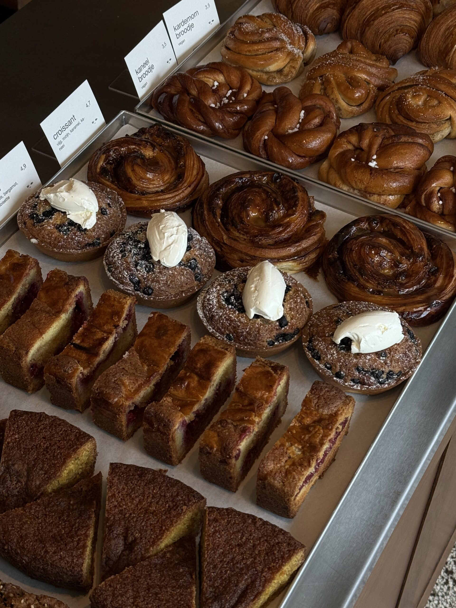
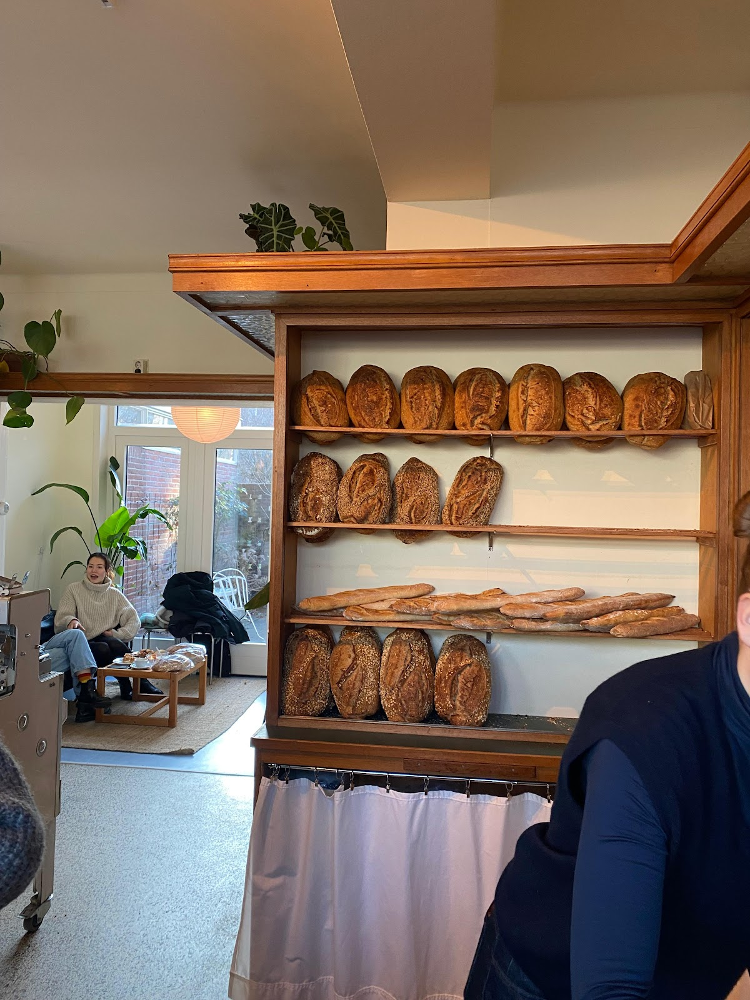
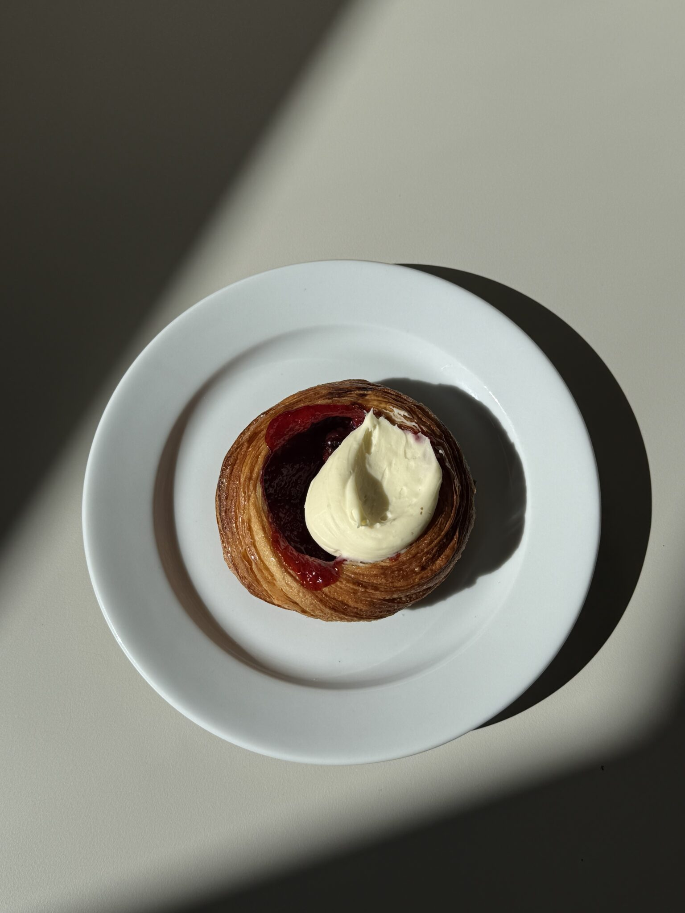
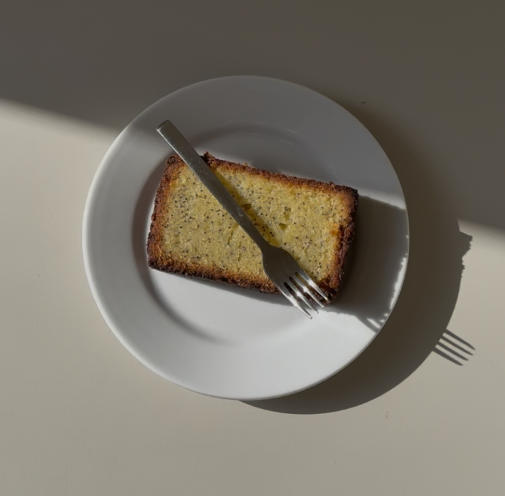
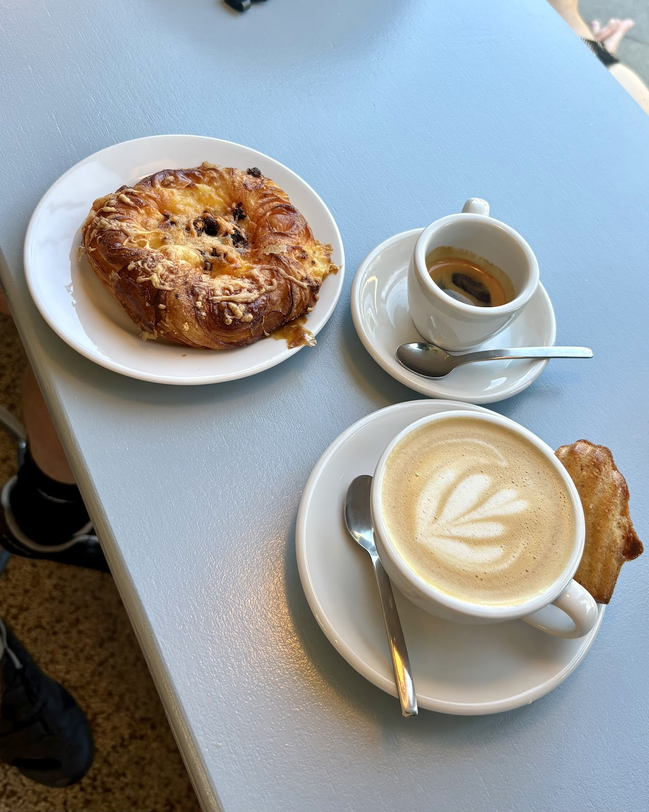
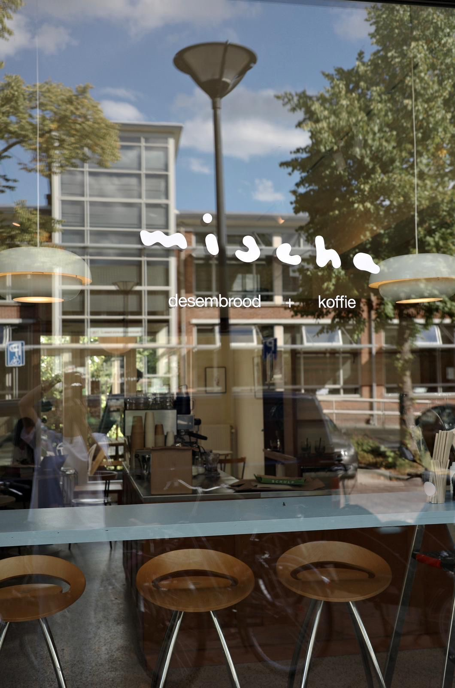
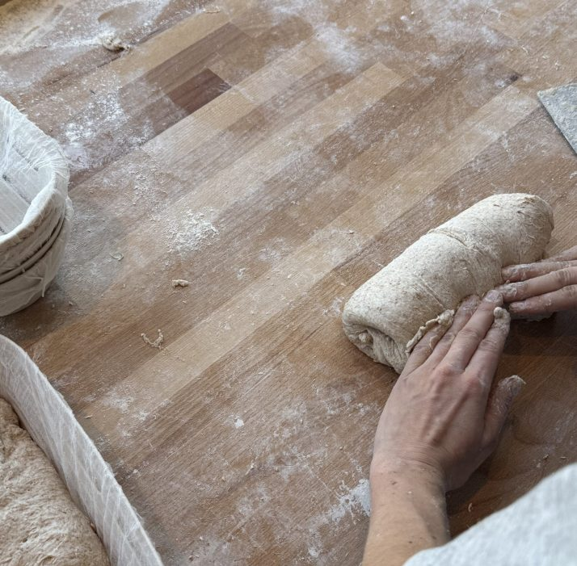
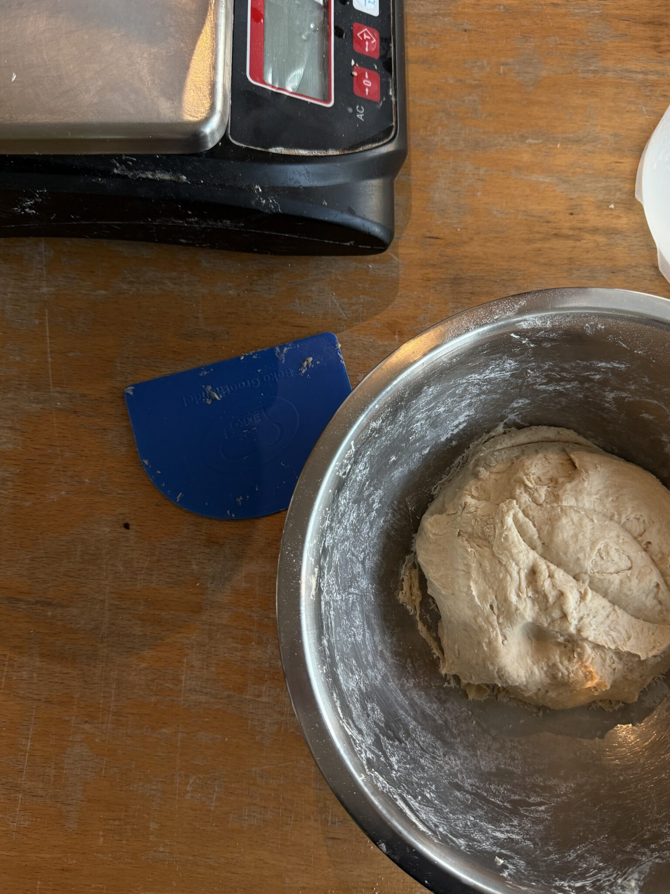

Bakkerij en koffie in Utrecht
gebakken met geduld.
Elke dag vers desembrood, croissants, patisserie en goede koffie. Alles maken we zelf, veelal met biologisch meel.
4,7 uit 155 Google-reviews

wat er vandaag op de toonbank ligt.
Alles wordt hier met de hand gemaakt, altijd met ingrediënten van hoge kwaliteit. Van de eerste korst tot de laatste kop koffie.

desembrood
Het hart van de bakkerij. Rustig gerezen, stevige korst, veelal van biologisch meel.

viennoiserie
Croissants zoet en hartig, kaneel- en kardemombroodjes.

patisserie
Verrassend van smaak, of juist heerlijk traditioneel.

en goede koffie.
Neem het mee, of blijf zitten. Binnen aan tafel of, met mooi weer, buiten in de patio.

kom langs.
Op dinsdag zijn we dicht. De andere dagen staat de koffie klaar vanaf de ochtend tot drie uur.
| maandag | 08:00 tot 15:00 |
| dinsdag | gesloten |
| woensdag | 08:00 tot 15:00 |
| donderdag | 08:00 tot 15:00 |
| vrijdag | 08:00 tot 15:00 |
| zaterdag | 09:00 tot 15:00 |
| zondag | 10:00 tot 15:00 |
Vragen of bestellen
info@bakkerijmischa.nlwat gasten zeggen.
4,7 uit 155 Google-reviews
“Alleen maar lof over deze plek. Ik kom er vaak. Heerlijk brood en patisserie, vriendelijke bediening en met mooi weer kun je lekker in de patio zitten.”
“ik zie deze bakery al zó lang voorbij komen dus ik wilde hier echt een keer heen 😭 en honestly het stelde niet teleur!!”
“Brood van uitstekende kwaliteit. Patisserie die zowel verrassend van smaak als traditioneel is, echt een grote aanrader. [...] Kortom, een bakker die ik nog miste in Utrecht!”
“‘De crispy chillies olie croissant is dat beste hartige snack die ik ooit heb gegeten’ -m'n vriendin. [...] De koffie, het eten, de passievolle mensen achter de balie alles hier klopt.”
bak je eigen desembrood.
In de desembrood-workshop leer je in drie uur hoe je zelf desembrood bakt: van het mengen van het deeg tot vormen, laten rijzen en bakken. Een van onze bakkers neemt je stap voor stap mee. Je krijgt uitleg over de theorie en gaat vooral zelf aan de slag.
Ervaring is niet nodig, de workshop is juist voor beginnende bakkers.
Je gaat naar huis met
- een eigen desemstarter
- het basisrecept
- een rijsmandje en een deegkrabber
- twee broden: één gebakken en één om thuis af te bakken
Workshoplocatie: Samuel van Houtenstraat 10, in dezelfde straat als de winkel.
Mail ons om te reserveren

wie is mischa?
De bakkerij wordt gerund door Gawan. Na jaren als kok koos hij voor één product: brood. Dat heeft hij van begin tot eind steeds verder verfijnd.
Toen de kans kwam om de voormalige bakkerij Loaf over te nemen, greep hij die meteen. De naam? Die komt van zijn tweede naam: Mischa.